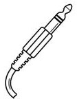
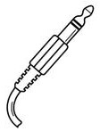

- Get an XLR and a monitor box from the In-Ear Monitors box.
- Get a rechargeable battery from one of the chargers.
- Plug the battery into the box, and make sure the box is set to MONO (not STEREO).
- Connect your box to the correct output at the back of the stage with an XLR (see below).
- Connect your headphones or monitors to the box.
- Turn the box ON.
- Connect to the "Tenth Gym" network with password: earsacce$$
- Use the Qu-You app to set your mix and control who you hear.
OUTPUT CHART
| I am on... | I should plug into... | and set my mix to... |
|---|---|---|
| Vocals | 3 or 4 | Mix3 |
| Electric | 9 | Mix4 |
| Acoustic | 10 | Mix5-6 |
| Keys | 11 | Mix7-8 |
| Bass/Drums | 12 | Mix9-10 |

- Get a mic stand, an XLR, and a vocal microphone.
- Set up your mic where comfortable.
- Plug your mic into channel 15, 19, or 21.
If you ARE using MainStage:
- Get a power bar, an XLR, and a stage bug.
- Set up the keyboard where comfortable.
- Place your laptop on a stand beside the keyboard.
- Use a MIDI cable (not provided) to connect your computer and the keyboard.
- Plug the 3.5 mm Stage Bug cable into your laptop's headphone jack.
- Using the XLR, connect the Stage Bug to channel 16.
If you ARE NOT using MainStage:
 

- Get a power bar, an XLR, a DI, and a quarter-inch.
- Set up the keyboard where comfortable.
- Connect the DI and the keyboard (LEFT OUT) by the quarter-inch cable.
- Using the XLR, connect the DI to channel 16.
- Get an XLR and the kick mic (should already be attached to the floor mic stand).
- Place the kick mic partway into the hole in the front of the kick drum.
- Use the XLR to plug the kick mic into channel 1.
- Get an XLR, a floor mic stand, an instrument mic, and an amp if you don't have your own.
- Set up your guitar and pedals where comfortable (usually stage left).
- Set up the amp, and point it towards the wall or the back of the stage.
- Place the instrument mic directly in front of the speaker of your amp.
- Use the XLR to plug the mic into channel 12.
- Get a quarter-inch, a DI, and an XLR.
- Make sure that your guitar batteries are FRESH and your tuner is OFF.
- Connect your guitar's pickup* to your DI with the quarter-inch cable.
- Use the XLR to plug the DI into channel 14 (or 2).
- Get a quarter-inch (the XLR and bass amp are usually kept on stage).
- While the bass amp is OFF, connect your bass to the amp with the quarter-inch.
- Check that the XLR from the back of the bass amp is connected to channel 11.
- Turn the bass amp ON.


- Get the CAT5 cable with protected ends on the top shelf of the closet.
- *Get the router, power cable, and other CAT5 cable from the In-Ear Monitors box.
- Set up the sound board on a table at the back right-hand corner of the gym.
- Plug one end of the protected CAT5 cable to the dSNAKE port on the board, and the other end to the "MIXER" plug on the wall.
- *Connect the router to the power bar.
- *Plug one end of the other CAT5 cable to the "Network" port on the board, and the other end to the router at the port farthest from the power cable with the "<-->" icon.
- Turn on the board by clicking in the Power button.
- Ensure all channels are muted. Then, go back to the closet and turn on the main sound system.